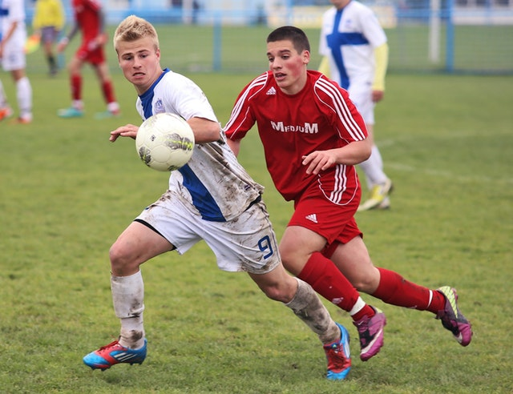

Soccer
A non official wikipedia page

Association football, more commonly known as football or soccer, is a team sport played between two teams of eleven players with a spherical ball. It is played by 250 million players in over 200 countries and dependencies, making it the world's most popular sport. The game is played on a rectangular field with a goal at each end. The object of the game is to score by moving the ball beyond the goal line into the opposing goal.
Players are not allowed to touch the ball with outstretched hands or arms while it is in play, unless they are goalkeepers within their penalty area. Other players mainly use their feet to strike or pass the ball, but may also use any other part of their body except the hands and the arms. The team that scores the most goals by the end of the match wins. If the score is level at the end of the game, either a draw is declared or the game goes into extra time or a penalty shootout depending on the format of the competition. The Laws of the Game were originally codified in England by The Football Association in 1863. Association football is governed internationally by the International Federation of Association Football (FIFA; French: Fédération Internationale de Football Association), which organises World Cups for both men and women every four years.
Name

The rules of association football were codified in England by the Football Association in 1863 and the name association football was coined to distinguish the game from the other forms of football played at the time, specifically rugby football. The first written "reference to the inflated ball used in the game" was in the mid-14th century: "Þe heued fro þe body went, Als it were a foteballe". The Online Etymology Dictionary states that the word "soccer" was "split off in 1863". According to Partha Mazumdar, the term soccer originated in England, first appearing in the 1880s as an Oxford "-er" abbreviation of the word "association".
Within the English-speaking world, association football is now usually called football in the United Kingdom and mainly soccer in Canada and the United States. People in Australia, Ireland, South Africa and New Zealand use either or both terms, although national associations in Australia and New Zealand now primarily use "football" for the formal name.
History
According to FIFA, the Chinese competitive game cuju (蹴鞠, literally "kick ball") is the earliest form of football for which there is evidence. Cuju players could use any part of the body apart from hands and the intent was kicking a ball through an opening into a net. It was remarkably similar to modern football, though similarities to rugby occurred. During the Han Dynasty (206 BC – 220 AD), cuju games were standardised and rules were established.
Phaininda and episkyros were Greek ball games. An image of an episkyros player depicted in low relief on a vase at the National Archaeological Museum of Athens appears on the UEFA European Championship Cup. Athenaeus, writing in 228 AD, referenced the Roman ball game harpastum. Phaininda, episkyros and harpastum were played involving hands and violence. They all appear to have resembled rugby football, wrestling and volleyball more than what is recognizable as modern football. As with pre-codified "mob football", the antecedent of all modern football codes, these three games involved more handling the ball than kicking. Non-competitive games included kemari in Japan, chuk-guk in Korea and woggabaliri in Australia.
Association football in itself does not have a classical history. Notwithstanding any similarities to other ball games played around the world FIFA has recognised that no historical connection exists with any game played in antiquity outside Europe. The modern rules of association football are based on the mid-19th century efforts to standardise the widely varying forms of football played in the public schools of England. The history of football in England dates back to at least the eighth century AD.
The Cambridge Rules, first drawn up at Cambridge University in 1848, were particularly influential in the development of subsequent codes, including association football. The Cambridge Rules were written at Trinity College, Cambridge, at a meeting attended by representatives from Eton, Harrow, Rugby, Winchester and Shrewsbury schools. They were not universally adopted. During the 1850s, many clubs unconnected to schools or universities were formed throughout the English-speaking world, to play various forms of football. Some came up with their own distinct codes of rules, most notably the Sheffield Football Club, formed by former public school pupils in 1857, which led to formation of a Sheffield FA in 1867. In 1862, John Charles Thring of Uppingham School also devised an influential set of rules.
 These ongoing efforts contributed to the formation of The Football Association (The FA) in 1863, which first met on the morning of 26 October 1863 at the Freemasons' Tavern in Great Queen Street, London. The only school to be represented on this occasion was Charterhouse. The Freemason's Tavern was the setting for five more meetings between October and December, which eventually produced the first comprehensive set of rules. At the final meeting, the first FA treasurer, the representative from Blackheath, withdrew his club from the FA over the removal of two draft rules at the previous meeting: the first allowed for running with the ball in hand; the second for obstructing such a run by hacking (kicking an opponent in the shins), tripping and holding. Other English rugby clubs followed this lead and did not join the FA and instead in 1871 formed the Rugby Football Union. The eleven remaining clubs, under the charge of Ebenezer Cobb Morley, went on to ratify the original thirteen laws of the game. These rules included handling of the ball by "marks" and the lack of a crossbar, rules which made it remarkably similar to Victorian rules football being developed at that time in Australia. The Sheffield FA played by its own rules until the 1870s with the FA absorbing some of its rules until there was little difference between the games.
The world's oldest football competition is the FA Cup, which was founded by C. W. Alcock and has been contested by English teams since 1872. The first official international football match also took place in 1872, between Scotland and England in Glasgow, again at the instigation of C. W. Alcock. England is also home to the world's first football league, which was founded in Birmingham in 1888 by Aston Villa director William McGregor. The original format contained 12 clubs from the Midlands and Northern England.
These ongoing efforts contributed to the formation of The Football Association (The FA) in 1863, which first met on the morning of 26 October 1863 at the Freemasons' Tavern in Great Queen Street, London. The only school to be represented on this occasion was Charterhouse. The Freemason's Tavern was the setting for five more meetings between October and December, which eventually produced the first comprehensive set of rules. At the final meeting, the first FA treasurer, the representative from Blackheath, withdrew his club from the FA over the removal of two draft rules at the previous meeting: the first allowed for running with the ball in hand; the second for obstructing such a run by hacking (kicking an opponent in the shins), tripping and holding. Other English rugby clubs followed this lead and did not join the FA and instead in 1871 formed the Rugby Football Union. The eleven remaining clubs, under the charge of Ebenezer Cobb Morley, went on to ratify the original thirteen laws of the game. These rules included handling of the ball by "marks" and the lack of a crossbar, rules which made it remarkably similar to Victorian rules football being developed at that time in Australia. The Sheffield FA played by its own rules until the 1870s with the FA absorbing some of its rules until there was little difference between the games.
The world's oldest football competition is the FA Cup, which was founded by C. W. Alcock and has been contested by English teams since 1872. The first official international football match also took place in 1872, between Scotland and England in Glasgow, again at the instigation of C. W. Alcock. England is also home to the world's first football league, which was founded in Birmingham in 1888 by Aston Villa director William McGregor. The original format contained 12 clubs from the Midlands and Northern England.
Conclusion
Each team consists of a maximum of eleven players (excluding substitutes), one of whom must be the goalkeeper. Competition rules may state a minimum number of players required to constitute a team, which is usually seven. Goalkeepers are the only players allowed to play the ball with their hands or arms, provided they do so within the penalty area in front of their own goal. Though there are a variety of positions in which the outfield (non-goalkeeper) players are strategically placed by a coach, these positions are not defined or required by the Laws.
The basic equipment or kit players are required to wear includes a shirt, shorts, socks, footwear and adequate shin guards. Headgear is not a required piece of basic equipment, but players today may choose to wear it to protect themselves from head injury. Players are forbidden to wear or use anything that is dangerous to themselves or another player, such as jewellery or watches. The goalkeeper must wear clothing that is easily distinguishable from that worn by the other players and the match officials.
A number of players may be replaced by substitutes during the course of the game. The maximum number of substitutions permitted in most competitive international and domestic league games is three, though the permitted number may vary in other competitions or in friendly matches. Common reasons for a substitution include injury, tiredness, ineffectiveness, a tactical switch, or timewasting at the end of a finely poised game. In standard adult matches, a player who has been substituted may not take further part in a match. IFAB recommends "that a match should not continue if there are fewer than seven players in either team." Any decision regarding points awarded for abandoned games is left to the individual football associations.
A game is officiated by a referee, who has "full authority to enforce the Laws of the Game in connection with the match to which he has been appointed" (Law 5), and whose decisions are final. The referee is assisted by two assistant referees. In many high-level games there is also a fourth official who assists the referee and may replace another official should the need arise.
- No hands
- Head ball
- Fouls
- Goals
- Only feet
- Large goals
- Fair play
Sources:
© 2018 Kevin
{kind=link}
{kind=link}